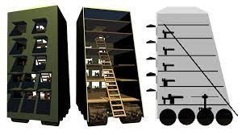

TANKI
Zgodovina
Delitev Tankov
|
Zgodovina
DEJSTVA:
- Zamisel o uporabi premikajoče se zaščite sega zelo daleč nazaj v zgodovino. Že stari Grki so zgradili stolp imenovan helepolis, ki je služil temu namenu.
- Asirci so imeli premikajoče zaščite za lokostrelce. V antični Kitajski pa so uporabljali vozičke imenovane Dongwu Che.
- Rimljani so na kolesa postavili katapult. Idejo o premikajoči se zaščiti je dobil tudi Leonardo da Vinci.
- Kasneje so se razvila orožja, ki so z lahkoto prebila leseno ogrodje, zato se taka zaščita ni več uporabljala v takem obsegu.
- Železo je bila dobra alternativa, saj imela zadostno neprebojnost. Težava je bila teža, ki je ovirala postavitev okvirjev na podvozja. Stvari so se začele spreminjati s prvimi motorji.
- Leta 1906 je Holt izdelal polgoseničen traktor, ki je nudil izjemne sposobnosti.
- Zaradi velike površine dotikališča tal se je povečala mobilnost po neprehodnih poteh
- Prvi vseterenski tank s premično kupolo je oblikoval Günther Burstyn leta 1911.

1. svetovna vojna
Prvi tank v 1. svetovni vojni je bil imenovan »Mother«. Ta tank je bil trapezoidne oblike. Ta oblika je ustrezala tehničnim zahtevam, saj je s to obliko zelo dobro premagoval ovire, ki so se pojavile na takratnih bojiščih. 12. februarja 1916 je britanska vojska naročila 100 tankov »Mother«, kasneje so naročilo povečali na 150.
Države so si tank predstavljale na več načinov. Britanci so si tank predstavljali kot vozilo, ki bo utiralo pot skozi ovire, Francozi pa kot samovozno artilerijo. Prvi tanki so bili nared za bojevanje šele junija 1916. Hitrejši razvoj tankov so zavirali vojskovodje, ki so zagotavljali hiter konec vojne. Vendar so razvoj tankov pospešili kmalu za tem, ko je bilo jasno, da vojna ne bo končana tako kmalu.
Kmalu za Britanci so Francozi razvili tank Schneider, ki je tehtal 13,5 ton. Za tankom tipa Schneider je sledil St Chamond, ki je bil za 8,5 tone težji (22 ton) od predhodnika in je bil oborožen s topom kalibra 75 mm. Francozi so imeli velike probleme z razvijanjem svojega tanka, saj so razvijali tank bolj ločeno. Britanci so vse svoje prizadevanje preusmerili v razvoj serije tanka Mark I. Francozi so stavili na kvantiteto tankov, saj so jih že v januarju in februarju leta 1916 naročili kar 800, kar je bistveno več od Britancev.
Imeli pa so tudi tehnične težave, saj je bilo od 400 zgrajenih tankov tipa Schneider uporabnih le 130. FT je bil zadnji tank v seriji francoskih tankov in je bil prvi tank z vrtljivo kupolo. To je bil Renaultov model, ki je na razpisu zmagal nad Peugeotovim. Bil je prvi sodobni tank. Vsi kasnejši modeli so se zgledovali po tem modelu. Načrtovali so izgradnjo 3700 tankov, vendar so nekateri podpirali težke tanke in se je Francija preusmerila v proizvodnjo tanka Char 2C. To je bil takrat najbolj tehnološko izpopolnjen tank, ki je bil razvit prepozno, da bi sodeloval v 1. svetovni vojni. Izdelanih je bilo 10 primerkov in velja za najtežji tank tistega časa.
15. septembra 1916 so tanki prvič nastopili v boju, ki je potekal pri Sommi. V vojno je zapeljalo 49 tankov Mark I. Rezultati so bili porazni, saj je že na začetku bilo sposobnih začeti boj le 32 tankov. Le devet se jih je prebilo do nemške linije. Francoske oblasti so bile kritične do britanske, saj so z majhnim številom tankov tvegali odkritje novega bojnega sistema, ki bi lahko pomenil prevlado na bojišču. Tanki Mark I so imeli velike težave z zanesljivostjo, vendar, ko so delovali so bili sposobni premagovati bojne jarke ali kraterje velikosti 2,7 metrov in peljati skozi sovražnikovo bodečo žico brez težav. Za tanke je bilo značilno, da so se zatikali v večje jarke,
vendar z novo romboidno obliko je bil tank sposoben premagovati še tako neprevozne poti.
V 1. svetovni vojni je bila hitrost tankov ne večja od hitrosti hoje. Tanki so imeli oklep, ki je zaščitil osebje pred lahkim pehotnim orožjem. Večje mine in direktni zadetki artilerijskega orožja so bili velika grožnja tanku. Pospešeno so se razvijale tudi protitankovska orožja. Problem prvih tankov je bila mala moč motorjev in razmeroma velika teža. Razmerje moč in teža je bila takrat okrog 3 hp/t. Danes se to razmerje giblje okoli 20 hp/t.
Francoska proizvodnja tankov je sprva bila v senci britanske. Vendar je prevzela pobudo, ko se je ustavila britanska serijska proizvodnja, v upanju na boljše modele tankov. Francozi so prvič uporabili tanke 16. aprila 1917 med Nivellsko ofenzivo. Na razpolago so imeli zelo veliko število tankov, vendar so se izkazali za pomanjkljive. Francoski tanki so za britanskimi zaostajali predvsem v sposobnosti vožnje po neprevoznem terenu. Francoski tanki so velikokrat ostali pred neprevozno oviro in s tem postali lahka tarča nemške artilerije.
Tanki so se prvič izkazali v bitki za Combrej, 20. novembra 1917. Boj je načrtoval J. F. C. Fuller. 476 tankov je prebilo nemško bojno črto in naredilo premik, ki je bil večji kot prej v treh letih. Tanki so s prihodom tanka Mark IV postali bolj zanesljivi kot prej. Leta 1918 so na bojišča prišli prvi tanki Mark V. Francozi so naredili odličen tank FT-17. Leta 1918 so pri kraju Soissons uporabili 480 tankov (večinoma tankov FT-17). V načrtu so imeli še večji napad leta 1919. V tem letu so hoteli v boj poslati 30000 tankov.
V Nemčiji so raje izdelovali protitankovska orožja in zasegali sovražne tanke. Edini nemški tank, ki je bil razvit, je bil A7V. Izdelanih je bilo le 20 primerkov, večinoma so jih zasegle nasprotne sile. Ta tank se je pomeril v prvem boju, ki je potekal tank proti tanku. Pomeril se je z britanskim tankom Mark IV. Boj je potekal 24. aprila 1918 v Villers-Bretonneuxu. Na vsaki strani so sodelovali po trije tanki.
Konec 1. svetovne vojne je dočakalo okoli 600 tankov.
Med obema vojnama
Britanci so takoj po vojni uničili večino tankov. Francozi so razvoj nadaljevali in prevzeli Britrancem vodilno vlogo v konstruiranju tankov. Za Renaultom FT so naredili tank R-35. Kasneje so tudi Britanci nadaljevali razvoj. Naredili so tank Vickers medium D. To je bil prvi tank z obesami z vzmetmi. Začela se je tudi delitev tankov v dve skupine. Deliti so se začeli na lahke tanke, ki so tehtali od 6 do 8 ton in na srednje, ki so tehtali od 10 do 20 ton.
Pojavili so se tudi tanki brez kupol, vendar so bili to le predhodniki lahkih tankov, saj so izkazali za bojno neučinkovite in neuporabne. Lahki tanki so bili zelo slabo zaščiteni in oboroženi so bili z orožjem manjšega kalibra. Od srednjih tankov pa so se tudi razlikovali po bistveno manjši ceni.
S prihodom tanka Vickers je postala Britanija spet vodilna v razvijanju tankov. Njihovi tanki so postali model za ostale tanke. Tank Vickers 6-Ton je postal model za poljski 7TP, za sovjetski T-26 in je imel velik vpliv na razvoj italijanski tank M-11 in M13 ter na češkoslovaški tank LT-35. Zanimivo je, da se tank Vickers 6-Ton ni uporabljal v britanski vojski kljub temu, da je imel tisti čas največji vpliv na razvoj tankov. Drugi vplivni britanski tank je bil Vickers Medium Mark II. Izstopal je po hitrosti, saj je dosegel hitrost 21 km/h. Imel pa je tudi polno vrtljivo kupolo, tako kot FT.
Na tuje proizvode tanke so vplivali tudi drugi britanski tanki, kot je Carden Loyd tanketa, ki je vplivala na razvoj sovjetskega T-27, italijanskega CV-33, nemškega tanka Panzer I ter druge kopije. Britanci so se ukvarjali tudi s proizvodnjo težkih tankov. Leta 1925 je nastal tank Vickers A1E1 Independent, ki je tehtal 32 ton. Tank se je kasneje uporabil kot model sovjetskim tankom T-28 in T-35 ter nemškemu Neubaufahrzeug.
Francija je uporabljala zelo velik spekter tankov, nekateri od njih so bili edinstveni. Njihova kalvarijska zvrst tanka je zapolnila del vloge tankov, kar danes imenujemo glavni bojni tanki. Velik uspeh francoske proizvodnje tankov je bil FT-17, ki se je ohranil vse do 2. svetovne vojne in celo sodeloval v njej. Sodeloval je tudi v bojih po svetovni vojni. Tank so posnemali Italijani (tank Fiat 3000) in Sovjeti (tank T-18). Po letu 1930 so se Francozi odločili zamenjati floto FT-17 z mešano floto težkih in srednjih tankov. FT-17 je zamenjal R-35, ki je bil zelo podoben svojemu predhodniku.
Izvožen je bil tudi v Romunijo in na Poljsko. Tanku R-35 sta sledila še dva lahka tanka. Prvi je bil Hotchkiss H-35, drugi pa AMR 35. Velik uspeh je požel tank Somua S-35, ki je imel takrat najboljše razmerje v mobilnosti, zaščiti in ognjeni moči. Njegov dolgi top (47 mm), je bil sposoben uničiti vse takratne tanke. Francija je izdelovala tudi težke tanke. Tak primer je bil Char B1 (char de bataille). Bil je del prodorne enote kalvarije.
Sovjetska zveza si je industrijsko opomogla v tem obdobju. Za razvoj tanka pa je bil zaslužen petletni program, katerega cilj je bil sestaviti največjo floto tankov. Do takrat je Sovjetska zveza imela tanke FT-17 in nekaj britanskih tankov. Prvi Sovjetski tank je bil T-18, ki se je zgledoval po tanku FT-17. Leta 1926 sta Sovjetska zveza in Nemčija podpisali rapalsko pogodbo (ta je bila v nasprotju z versajsko pogodbo), in po njej ustanovili skupno tankovsko šolo. Obe strani sta od te šole odnesli veliko koristi. Porabili so tudi na milijone dolarjev za nakup opreme, ki je bila namenjena za modernizacijo tovarn, za traktorje in kasneje za izdelavo tankov.
Nakupili so večinoma ameriško tehnologijo. Naslednji uspešen model je bil tank T-26, ki je bil kopija tanka Vickers E. Začeli so izdelovati prototip ameriškega tanka Christie M1930. Iz tega tanka je nastala serija BT hitrih tankov. Sledila sta srednje težki tank T-28 in težki tank T-35. Vsi Sovjetski tanki med letoma 1930 in 1940 so bili v 97. procentih kopije ali pa zelo podobno izboljšani tanki. Med letoma 1937 in 1941 je izginilo približno 54000 funkcionarjev v vojski, zato je v tem obdobju razvoj v Sovjetski zvezi stagniral.
Po versajski pogodbi Nemčija ni smela izdelovati tanke nobene vrste. Imela je lahko le nekaj avtomobilov z oklepi. Leta 1926 so se Nemci neuradno ukvarjali z razvojem tanka pod vodstvom Von Seeckta, ki je bil poveljnik enote Reichswehr. Prvi tank imenovan Grosstraktor (»Velik traktor«) so izgradili v tovarni Rheinmetall-Borsig. Bil je zelo podoben britanskemu tanku Mk II. Ta in drugi modeli so bili skupaj s sovjetskimi testirani v tankovski šoli v Sovjetski zvezi. Leta 1931 so Nemci sprejeli načrt za izgradnjo dveh tankov. Prvi, srednji tank s topom 75 mm in drugi, lahki tank s topom 37 mm. Prvi tanki so bili zgrajeni pod imenom Landwirtschaftlicher Schlepper (La S).
Prvi takšen tank je prišel leta 1934 z imenom Krupp, ki je bil kopija tanka LKA1. Nova vlada je leta 1934 odobrila nakup 150 tankov. Končno število zgrajenih je bilo 1500. Z večjimi izkušnjami so si Nemci zadali nov načrt, izgradnjo tanka Panzerkampfwagen (»oklepno bojno vozilo«, kratica je PzKpfw ali PzKw). Prvi takšen tank je bil PzKpfw I Ausf A, ki je bil zgrajen po tanku Carden Loyd tankette. Večja različica tanka je bil Ausf B. Oba pa sta sodelovala v španski državljanski vojni. Tam so ju poslali na testiranje tako kot ostala orožja. Iz izkušenj so spoznali, da bo naslednja generacija tankov morala imeti boljši oklep ter večji doseg in kaliber orožja.
Nastal je tank PzKpfw II, ki je bil za 50 % težji od predhodnika. Tudi ta tank je bil poslan v vojno. Izkazal se je za odličnega proti lahkim tankom, proti težkim tankom pa ni bil tako uspešen. Do konca španske državljanske vojne je bilo zgrajenih 955, skupaj pa okoli 4000. Nemčija si je s prilastitvijo Češkoslovaške omogočila vstop v češko industrijo tankov. Češka je že razvijala dva tanka. Prvi je bil Škoda LT-35, drugi pa Českomoravská Kolben-Daněk TNHP. Oba tanka sta bila prenesena v Nemčijo. Imenovana sta bila Panzer 35(t) in Panzer 38(t). Prvi je imel 11 ton drugi pa 9,5 ton. V nemški vojski so bili skoraj sami lahki tanki. Vsi težki tanki so bili v razvojni fazi.
Prvi tanki so bili narejeni pod imenom Neubaufahrzeug (NbFz). Narejenih je bilo le šest in so se uporabljali večinoma kot propaganda. Le trije so sodelovali v bojih. Uporabili so znanje iz tanka in ga usmerili v proizvodnjo srednjih tankov. Nastala je nova generacija tankov. Izdelali so 22 ton težkega PzKpfw III in 25 tonskega PzKpfw IV.
Na daljnem vzhodu v Japonski so leta 1927 naredili svoj prvi tank, ki je bil zgrajen po zgledu tanka Vickers Mark C. Imenovan je bil Type 87 Chi-I, ki pa je bil pretežki in prepočasen, da bi se uveljavil, zato so se odločili narediti nov model. Japonci so bili prvi, ki so v tanke vgradili dizel motorje. Naslednji model se je imenoval Type 89 Chi-Ro, ki je bil lažji, krajši od Type 87 Chi-I. Imel je tudi izboljšan oklep ter boljši, vodno hlajeni motor. Bil je prvi tank, ki je šel v večjo serijsko proizvodnjo. Leta 1935 so Japonci naredili nov lahki tank imenovan Type 94 Te-Ke. Bil je težek le 3,4 tone in se je uporabljal bolj kot izvidnik in dostavljalec na bojišču.
Omembe vreden je tudi tank Type 95 Ha-Go, ki je bil skoraj dvakrat večji od Type 94 Te-Ke, tehtal je 7,4 tone. Pri Mitsubishiju so jih zgradili več kot tisoč. Leta 1936 so Japonci iskali zamenjavo za tank type 89. Leta 1937 se je iz tega projekta razvil srednji tank Type 97 Chi-Ha.
V ZDA so po 1. svetovni vojni opustili razvoj tankov. Šele leta 1934 so začeli ponovno izdelovati tanke. Po prošnji konjenice so zgradili tri prototipe T2, T2E1, in T2E2. T2 so naredili po zgledu britanskega tanka Vickers 6-Ton. Tank je bil standardiziran kot M1. Tanka T2E1 in T2E2 sta bila standardizirana kot M2A1 in M2A2. ZDA so v vojnem času zgradile le nekaj sto tankov. Po 1. svetovni vojni pa le 15, ki so imeli zelo slabo kvaliteto in po navadi privatne izdelave. Zaradi nižjega proračuna vojske so bile tudi dobre zamisli že na začetku zavrnjene. Namesto, da so izdelovali prototipe, so ZDA izdelovale posamezne dele motorjev in podvozja, ki so prišle prav pred vojno.
Razvoj tankov v ZDA se je doživel pred 2. svetovno vojno. Pred vojno so zaživela dva modela M4 Sherman in M3 Lee.
Tanki v 2. svetovni vojni
V 2. svetovni vojni so tanki dosegli nove meje zmogljivosti. Največji napredek se je videl pri nemških tankih. Zaradi oboroževalnega načrta pred vojno so njihovi tanki v veliko pogledih izstopali. Zelo pomembna je bila tudi njihova taktika, saj so bili tanki le del celote, ki so jo tvorili vsi drugi rodovi. S taktiko imenovano Blitzkrieg (bliskovit boj) so dosegli presenetljivo dobre rezultate. Francozi so za razliko od Nemcev stavili na počasne in premišljene premike. Njihovi tanki so bili izven razreda nemškim. Nemški so imeli veliko boljši ščit in bojno moč. Tako kot v 1. svetovni vojni so tudi v 2. naredili zelo težke poizkusne tanke.
Zelo velik napredek je doživela komunikacijska tehnologija. V tanke so začeli vgrajevati radio. Izboljšali so tankovsko kontrolo in poveljstvo. Tanki so dobili nove naloge kot so čiščenje min, inženirska dela in metalci ognja.
Na začetku 2. svetovne vojne tanki niso igrali velike vloge v nemških oboroženih silah. Le 4 % obrambnega proračuna je bilo namenjenega za oklepne bojne enote. Panzer III je bil v proizvodnji, drugi podporni tank, ki je bil v načrtu pa ne. Ko so Nemci vdrli v Poljsko je bilo na voljo le nekaj 100 tankov, kljub temu so igrali pomebno vlogo. Na začetku so Nemci uporabljali večinoma tanke Panzer I in Panzer II ter češke tanke Panzer 38(t)in Panzer 35(t). Šele decembra leta 1940 je proizvodnja tankov Panzer III dosegla 100 primerkov na mesec. Maja 1940 je bilo na voljo 349 tankov Panzer III za napad na Francijo. Verzija tanka Panzer III Ausf.
F je nadomestila Ausf. G, ki pa je še zmeraj bila veliko bolj slabša kot britanski tanki. Težave so se pojavile v slabem oklepu in zahtevni mehanizaciji. Z verzijo Ausf. H so se te težave odpravile. Z verzijo Ausf. J, je tank dobil tudi nov top kalibra 50 mm. Prava moč nemških tankov se je pokazala leta 1941, ko so v operaciji Barbarossa uporabili 3350 tankov. Nemčija je bila tarča izjav, da so za uspeh zaslužni njihova številna tankovska enota, vendar izjave ne držijo, ker so imeli Sovjeti okoli 24000 tankov, kar je dvakrat več kot celoten preostali svet. Nemci so tankom dodeli naloge, katere so se dobro ujemale z drugimi rodovi. V tej bitki se je pokazala izjemna moč taktiziranja.
Leta 1943 so zaradi pomanjkanja surovin za tank Panzer III vgradili top 75 mm (Ausf. M), ki je bil najmočnejši top dotlej. Proizvodnja tanka Panzer IV je potekala prepočasi. Do leta 1940 je bilo zgrajenih 386 tankov verzije Ausf. D. Največja prednost tega tanka je bila kratka cev kalibra 75 mm. Največ preglavic je nemškim tankom delal sovjetski tank T-34, ki je bil daleč najboljši v tedanjem času. T-34 je bil dobro zaščiten tank, ki je imel tudi že ukrivljen oklep. To je gnalo Nemce naprej, da so zgradili nov top, ki je bil vgrajen v tank Panzer III. Imenoval se je Ausf. G. Top je bil velik 75 mm in je lahko prebil 80 mm velik oklep. Med vojno je bilo teh tankov zgrajenih 12000.
Posledica tanka T-34 je bila proizvodnja tanka Panter, ki je bil izdelan kot PzKpfw V Panter. Gradil se je že naslednik tega tanka. Panzer VI imenovan kot Tiger. Ta je bil znan po novem kalibru tanka (88 mm). Zaradi težav v nemški vojski proizvodnja tankov Panter in Tiger ni šla po načrtih. Proizvodnje so delale veliko manj primerkov, kot je bilo predvideno.
Združeno kraljestvo je prišlo v vojno zelo nepripravljeno. Britanci niso usmerjali toliko pozornosti v razvoj tankov. To jih je stalo velike prednosti, saj so v vojno prišli pripravljeni z nekaj sto nezanesljivimi tanki. A9, A10, Crusader (A15), Matilda (A11) in Matilda II (A12) so bili lahki plen nemškim tankom. Imeli pa so nekaj svetlih točk svoje tankovske enote. Ti tanki so bili Valentine, Churchill (A22), Cromwell (A27M), in Comet I (A34). Valetine je bil zelo dobro izkoriščen v bojih v puščavi, ki je sodeloval kot lahki tank v rdeči armadi. Churchill je imel zelo dober oklep ter dobre terenske zmogljivosti.
Crowell se je v veliko pogledih kosal s tankom Panzer IV, vendar je bil zgrajen v malo primerkih. Še eden odličen tank je bil Comet I, ki se je razvil šele v zadnjih trenutkih svetovne vojne. V sredini leta 1942 so bile britanske enote večinoma opremljene z ameriškimi tanki kot so Stuart, Lee in Sherman. Britanci so naredili veliko prototipov tankov za vse namene.
Sovjetska zveza je vojno pričela z več tanki kot ves ostali svet skupaj. Največ je bilo tankov T-26, ki so bili oboroženi s 45 milimetrskim topom, ki je bil pri običajni razdalji prebil vsak nemški tank. Ta tank je imel težavo, ker ni dopuščal nadaljnjega razvoja. Obratno je bilo s tankom serije BT, ki je bil tedaj najbolj mobilen tank na svetu. Vendar se je tem tankom skupaj s tankoma T-37 in T-38, iztekala življenjska doba. Življenjska doba se je iztekala tudi tankom modela T-28, ki je bil po zmogljivostih še najbolj blizu Pzkw-IV. Nekateri najboljši tanki so vstopili v proizvodnjo šele leta 1940 in 1941. Daleč najboljši je bil tank T-34, ki je bil zgrajen po zgledu serije BT.
T-34 je kmalu zamenjal vse ostale tanke ter ostal v službi vse do konca vojne. Drugi napred je bil KV, serija težkih tankov.
KV serija je imela enako dober top kot T-34. Imel je top 76.2 mm, veliko boljši oklep kot T-34, bil je veliko počasnejši, saj je bil bolj prebojni tank. KV-2 je bil opremljen s topom 152 mm howitzer. Tanki so bili uporabljeni kot glavni bojni tanki do leta 1943, ko se je končala njihova proizvodnja. V letu 1944 je te tanke zamenjal tank IS-2, ki je bil opremljen s topom 122 mm. Z letom 1941 so Sovjeti hoteli zamenjati tank T-26 z modelom T-50 (podporni tank), ki je imel izjemen oklep, vendar slab motor, zato je bil umaknjen iz uporabe. Kasneje so zapolnili praznino lahkih tankov z amfibijskim tankom T-40 in neamfibijskim tankom T-60.
Za tankom T-60 je sledil T-70. Oba sta bila zelo bojno neučinkovita, vendar jih je nizka cena proizvodnje ohranila v proizvodnji. Iz T-70 je nastal veliko bolj pomembnejši tank SU-76.
Proizvodnja tankov T-34 se je ustavljala šele leta 1943, ko so se pokazale potrebe po težjih tankih. V sredini leta 1945 so Sovjeti izdelali še eden pomemben tank, ki se je imenoval IS-3. Od IS-2 se je razlikoval po tanjšem oklepu in manjši teži. Izredno zanimiv je bil tudi oklep, ki je bil zgled tudi drugim tankom v kasnejši proizvodnji.
ZDA je opremila ne samo svoje tankovske enote, ampak tudi britanske, francoske in druge zavezniške države s tanki. ZDA so se kot Sovjetska Unija odločili le za najboljše ideje za tank in jih začeli uresničevati tako, da so lahko gradili na njihovi prihodnosti. ZDA so prišle v vojno z le nekaj tanki. Leta 1940 so imeli 464 tankov od katerih je bil najpomembnejši tank M2. Na začetku je bil najpomebnejši tank v ZDA. Izboljšana verzija tanka M2 je bil tank M3A3. Imel je nekaj izboljšav, saj je bil tank M2 zelo slabe kvalitete. Po potrebah ZDA, da zgradijo srednje tanke s topom 75 mm, je nastal tank M4, ki je bil pomemben tank med zavezniki.
Bil je najštevilčnejši in edini, ki je sodeloval v vseh vojskah zaveznikov v 2. svetovni vojni. Bil je tudi enakovreden nemškim tankom Panzerkampfwagen/PzKpfw III in IV. Prvič je sodeloval v boju leta 1942. Do prihoda tanka Panter in Tiger I je bil izvrstna protiutež nemškim tankom. Po teh tankih so ZDA naredile uničevalca tankov M10. Bil je oborožen z 90 mm topom. Leta 1944 je v uporabo stopil tudi tank M36, ki je imel top zmožen prebiti oklep tanka Panter na razdalji 600 m. V ZDA je nastal tudi najboljši lahki tank 2. svetovne vojne. Leta 1944 je prišel v proizvodnjo tank M24, ki je bil predhodnik tanka M60.
Ta tank je nastopil v vojni šele decembra 1944. Tudi tank M26 je prišel v proizvodnjo šele proti koncu vojne
Obdobje hladne vojne
V tem obdobju so si stale nasproti države članice pakta NATO in države Varšavskega pakta. Države članice Varšavskega pakta so razvijale le nekaj učinkovitih tankov, ki so bili standardizirani v celotnem paktu. Države pristopnice NATA so razvijale tanke vsaka posebej,vendar z malo skupnimi točkami. Zaradi oboroževalne vojne je bila serijska proizvodnja zelo v ospredju. Razvijanje tankov se ni ustavilo, zato je v tem času tehnologija močno napredovala. Velike spremembe so nastale pri oklepu. Ta je postal tanjši, vendar veliko bolj učinkovit. Zelo se je povečal tudi kaliber topa. Izboljšali so se drugi tehnološki pripomočki, kot so namerilniki.
Najmanj se je spremenil način polnjenja topov, saj je ta potekal ročno. Proračun razvijalcev je zelo nihal. V ospredju je bilo mišljenje, da oklep ni več tako pomemben odkar obstajajo orožja za množično uničenje. Zato so leta 1950 opremili tanke z zaščito proti kemičnem, biološkem in jedrskem orožju.
V tem obdobju se je iz razreda srednjih tankov razvila kategorija glavnih bojnih tankov. Ta kategorija je nastala potem, ko so srednji tanki začeli imeti top visoke prebojnosti, saj so prebili skoraj vse oklepe. Prednost pred voznimi lastnostmi so še naprej imeli bojna moč ter dobra zaščita. Tipični glavni bojni tanki so bili tanki, ki so bili bolje oboroženi kot drugi tanki v boju, z dobrim oklepom, visoko vodljivostjo in ne predrago serijsko proizvodnjo. Takšni tanki so bili britanski Centurion, sovjetski T-55, ameriški M47 in M48. Ti tanki so se skozi čas zelo izboljšali. Nekateri od teh tankov so v uporabi ostali vse do 21. stoletja.
Lahki tanki so se še naprej proizvajali, vendar v zelo omejenih številkah. S prihodom močnejših tankov so igrali zelo postransko vlogo, njihove naloge pa so bile zelo specializirane. Tak primer je tudi sovjetski tank PT-76. Ta tank je bil narejen z amfibijskimi sposobnostmi. Ta tank je imel top dovolj močnega kalibra, da bi uničil nasprotnikov tank, čeprav ni bila to običajna naloga za lahke tanke. Lahki tanki so imeli zelo slabo zaščito, saj je ravno oklep kriv za velike teže tankov. S tanjšim oklepom so zmanjšali težo, vendar so s tem zmanjšali varnost ekipe.
Podoben tank je bil tudi ameriški tank M551 Sheridan, ki ga je bilo mogoče prevažati tudi z letalom, imel je tudi sposobnost brodenja. Lahki tanki so tudi izgubljali vlogo izvidništva, saj je to nalogo prevzel helikopter.
Razvijanje težkih tankov je še nekaj časa potekalo. Težki tanki bi delovali skupaj s srednjimi tanki. Težki tanki so bili dobra protiutež nasprotnikovi tankovski enoti. Razvoj težkih tankov se je ustavil v šestdesetih in sedemdesetih letih, ko so se začela razvijati protitankovska orožja. To je pomenilo veliko prihranjenega denarja, saj je imelo protitankovsko orožje enako funkcijo kot težki tank.
21. stoletje
21.stoletje
Kljub koncu obdobja hladne vojne ter mrzličnega oboroževanja, večina vodilnih držav ohranja razvojne projekte. Velik napredek je prinesel prosto trgovanje z orožjem za Rusijo. To ji omogoča nadaljnji dohodek za razvoj tankov. Večina manj razvitih in manjših držav si ne more privoščiti dragih zahodnih tankov, ki se ponašajo z nazivom tanki tretje generacije. Velika moč takšnih tankov se je pokazala v Zalivski vojni. Izmed 1848 tankov M1A1 Abrams je bilo iz uporabe umaknjenih le 23. Razvoj tankov poteka naprej. Razvijajo se novi tanki, ki bi lahko pripomogli k še večji varnosti in učinkovitosti na sodobnem bojišču.
Vrsta tankov
| Po teži |
Po pomembnosti |
Po generaciji |
| Lahek tank |
bojni tanki |
1.generaciaja-Tanki iz 2. SV. vojne. |
| Srednji tank |
inženirski tanki |
2.generaciaja-sodobni tanki pred letom 1980 |
| Težki tank |
tanki- mosto nosilci |
tretja generacije-sodobni tanki po letu 1980 |
| Super težki tank |
tanki- mino čistilce |
|
|
tanki-dvigala |
|
|
tanki- plameno metalci |
|
|
posebni tanki |
|
Deli tankov
Osnove deli od tanka:
- Gosenice
- Puške
- Motor z notranjim izgorevanjem
- Hull
- Kupola
- Oklep

Kompletni opis tanka
- Optični periskop
- Plašč za pištolo
- Koaksialna pištola
- Sesalnik dima
- Glavna pištola
- Vozniška optika
- Voznikova loputa
- Glacis plošča
- Track
- Strelivo za strojnico
- Poveljnikov MG
- Kupola
- Turret obroč
- Hull
- Dovod zraka v motor
- Motorni prostor
- Oklepno krilo
- Pogonski zobnik
- Cestno kolo
Setavni deli
Optični periskop
- Plašč za pištolo
- Koaksialna pištola
- Sesalnik dima
- Glavna pištola
- Vozniška optika
- Voznikova loputa
- Glacis plošča
- Track
- Strelivo za strojnico
- Poveljnikov MG
- Kupola
- Turret obroč
- Hull
- Dovod zraka v motor
- Motorni prostor
- Oklepno krilo
- Pogonski zobnik
- Cestno kolo
Dostop SSKJ prek spleta
TANKI PO ČASU:
- 1.svetovna vojna
- Francija
- Nemčija
- Italija
- Rusija
- Druženo kraljestvo
- 2.svetovna vojna
- Afganistan
- Argentina
- Australia
- Belgija
- Bolgarija
- Kanada
- Kitajska
- Češkoslovaška
- Danska
- Finska
- Francija
- Nemčija
- Madžarska
- Indija
- Italija
- Japonska
- Nizozemska
- Nova Zalandija
- Norveška
- Poljska
- Romunija
- Južna Koreja
- Sovjestka zveza
- Tajska
- Združeno kraljestvo
- Jugoslovija
- OSTALI TANKI!
Moj najlubši tank:

T-150
T-150 je sovjetski težki tank, ki je bil predstavljen leta 1941 med drugo svetovno vojno. Bil je eden najtežjih tankov svojega časa, tehtal je približno 50 ton in imel posadko 6 članov. Tank je bil oborožen s topom kalibra 76,2 mm in več mitraljezi ter je imel debel oklep, ki je zagotavljal dobro zaščito pred sovražnikovim ognjem.
Med vojno se je T-150 izkazal za mogočno orožje na bojišču. Njegov debel oklep je sovražnikovim tankom oteževal prodor, njegova močna puška pa je lahko uničila sovražne tanke na velike razdalje. Tank je zaradi širokih gosenic in dobrega vzmetenja lahko prečkal tudi zahtevne terene, kot so močvirja in reke.
Na splošno je bil T-150 dobro zasnovan tank, ki je bil učinkovit v boju. Vendar je imel, tako kot vsi tanki, svoje omejitve, kot sta počasna hitrost in omejen doseg. Poleg tega so tank sčasoma presegli novejši, naprednejši tanki, ki so bili razviti po vojni.
Pomembno je omeniti, da je koncept "najboljšega" subjektiven in odvisen od različnih dejavnikov, kot so specifična situacija, sovražnikove zmogljivosti in cilji misije.
Avtor:
Avtor je naredil spletno stran, zadridi ocene in za znanje naprej. Potrudil sem bom, da bom napredoval. Ta spletna stran je namenjana tistim, ki me podpirajo in zanimajo za tanke. Hvala da ste pogledeli mojo spletno stran!Če imete kakšno idejo za novo spletno stran, mi pišite na gamil.
Na začetek
Avtor:Ožbej Sedeljšak
Šola:Vegova
Država:Slovenija
Razrednik:Mitja Žnidaršič
Datum:2.3.2023